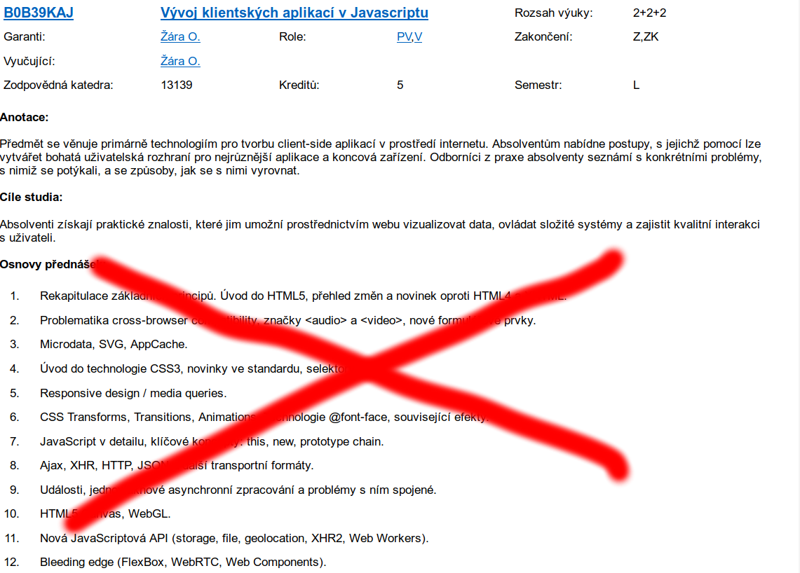

Kniha

- JavaScript – Programátorské techniky a webové technologie
- Vydává cpress.cz
- Určeno pro zájemce o JavaScript po absolvování základního kurzu
- Povětšinou jen JS, méně DOM rozhraní

 +
+  (Web
Hypertext
Application
Technology
Working
Group)
(Web
Hypertext
Application
Technology
Working
Group)

| Jméno | Verze | Renderer | JavaScript | Poznámka |
| Mozilla Firefox | 51 | Gecko | SpiderMonkey | |
| Google Chrome | 56 | Blink/WebKit | V8 | |
| Apple Safari | 10 | WebKit | JSC | Existovala verze pro Windows |
| Microsoft Internet Explorer | 11 | Trident | Chakra | Zajímavý až od verze 9 |
| Microsoft Edge | 14 | EdgeHTML | Chakra | |
| Opera | 12/42 | Presto/Blink | Carakan/V8 |
Polyfill: JavaScriptový kód, který je schopen doplnit chybějící funkcionalitu při zachování kompatibilního API
if (!("onhashchange" in window)) {
var oldHash = window.hash;
setInterval(function() {
if (window.hash == oldHash) return;
oldHash = window.hash;
if (window.onhashchange) window.onhashchange();
}, 100);
}
querySelector, addEventListener)Vývojářské nástroje v každém prohlížeči (typicky F12)
console.log("...");
console.log("test", 123, ["pole", "hodnot"]);
console.log("Formatovani %s", "retezcu");
console.warn("warning");
console.error("crash");
console.time("test");
console.timeEnd("test");
Více info v kompletní dokumentaci.
var data = {
jmeno: "Eva",
prijmeni: "Stará",
vek: 74
};
for (var p in data) {
console.log(p); // "jmeno", "prijmeni", "vek"
}
var data = [15, "babicka", true];
// spravne
for (var i=0; i<data.length; i++) {
console.log(i); // 0, 1, 2
console.log(data[i]); // 15, "babicka", true
}
// spatne – ale proc?
for (var p in data) {
console.log(p); // 0, 1, 2
}
for-in občas fungujenew Array(10)Array.prototype.X = ...var data = [15, "babicka", true];
/* anonymni funkce */
data.forEach(function(item, index) {
console.log(item); // 15, "babicka", true
});
/* pojmenovana funkce */
function log(item, index) {
console.log(index);
}
data.forEach(log); // 0, 1, 2
var data = [1, 2, 3];
function square(x) { return x*x; }
var data2 = data.map(square); // 1, 4, 9
function odd(x) { return x % 2; }
var data3 = data.filter(odd); // 1, 3
var data = [1, 2, 3];
function odd(x) { return x % 2; }
data.every(odd); // false
data.some(odd); // true
function add(x, y) { return x+y; }
data.reduce(add); // 6
(function(){
var document = "test"; // lokalni promenna
alert(document); // "test"
})();
alert(document); // [object HTMLDocument]
documentvar p = document.querySelector("p");
/* HTML parser, pozor na XSS! */
p.innerHTML = "<strong>toto je test</strong>";
/* jen text */
p.textContent = "<strong>toto je test</strong>";
var p = document.querySelector("p");
var strong = document.createElement("strong");
p.appendChild(strong);
var text = document.createTextElement("toto je test");
p.appendChild(text);
var input = document.createElement("input");
input.type = "number";
input.id = "foo";
classvar p = document.querySelector("p");
p.className = "class1";
p.classList.add("class2");
p.classList.remove("class3");
p.classList.contains("class2"); // true
p.classList.toggle("class4");
p.classList.toggle("class4", x > 15);